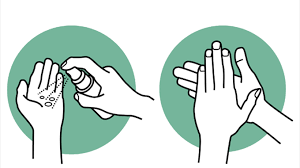

What is Hand Hygiene?
Hand hygiene refers to any action of hand cleaning — the act of removing or killing microorganisms on the hands to prevent the spread of infection. It is widely recognised as the single most important practice in preventing healthcare-associated infections (HAIs).
The World Health Organization (WHO) defines hand hygiene as a general term referring to any action of hand cleansing, including the use of alcohol-based hand rub (ABHR) or handwashing with soap and water.
Healthcare workers' hands are the most common vehicle for the transmission of healthcare-associated pathogens from patient to patient and within the healthcare environment.

Proper hand hygiene is not merely a clinical recommendation — it is a fundamental human right for patients, who deserve to receive care from healthcare workers with clean hands.
Why Hands Spread Infection
Hands act as a bridge between patients, surfaces, and healthcare workers. Microorganisms — including bacteria, viruses, and fungi — can survive on hands for varying lengths of time, enabling onward transmission unless hands are effectively decontaminated.
Transient Flora
Microorganisms recently acquired from the environment or patient contact. These are easily removed by routine hand hygiene.
Resident Flora
Deep-seated organisms that colonise the skin layers. Less easily removed but less commonly associated with infection transmission.
Contaminated Surfaces
Bed rails, call buttons, and medical equipment harbour pathogens that transfer to hands during routine patient care.
Rapid Spread
A single contaminated hand can transfer thousands of organisms to surfaces and patients within minutes of contact.
Studies consistently show that pathogens such as MRSA, C. difficile, and VRE can persist on hands and surfaces for hours — making regular hand hygiene a continuous obligation throughout any shift.
Types of Hand Hygiene
Not all hand hygiene is the same. The method chosen depends on the level of contamination, the clinical situation, and the availability of resources.
| Type | Method | Duration | Best For |
|---|---|---|---|
| Routine Handrub | Alcohol-Based Hand Rub (ABHR) | 20–30 seconds | Most clinical situations |
| Routine Handwash | Soap & water | 40–60 seconds | Visibly soiled hands, C. diff |
| Surgical Handrub | ABHR, extended technique | 3–5 minutes | Before surgical procedures |
| Surgical Handwash | Antiseptic soap & water | 2–5 minutes | Surgical prep, nail cleaning |
When hands are not visibly soiled, ABHR is the preferred method as it is faster, more effective against most pathogens, and gentler on skin than soap and water.
When to Clean Your Hands
The WHO developed the My 5 Moments for Hand Hygiene framework to help healthcare workers identify the critical points during patient care when hand hygiene must be performed.
-
1Before touching a patient To protect the patient against harmful germs carried on your hands.
-
2Before a clean/aseptic procedure To protect the patient against harmful germs, including the patient's own germs, entering their body.
-
3After body fluid exposure risk To protect yourself and the healthcare environment from harmful patient germs.
-
4After touching a patient To protect yourself and the healthcare environment from harmful patient germs.
-
5After touching patient surroundings To protect yourself and the healthcare environment from harmful patient germs.
These five moments will be explored in depth in Module 2. For now, understanding their existence helps frame why any hand hygiene routine must be consistent, not selective.